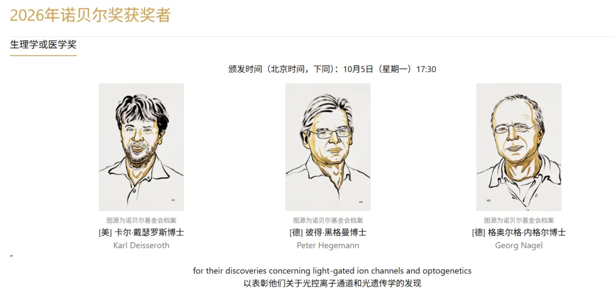
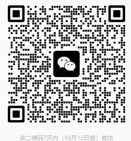
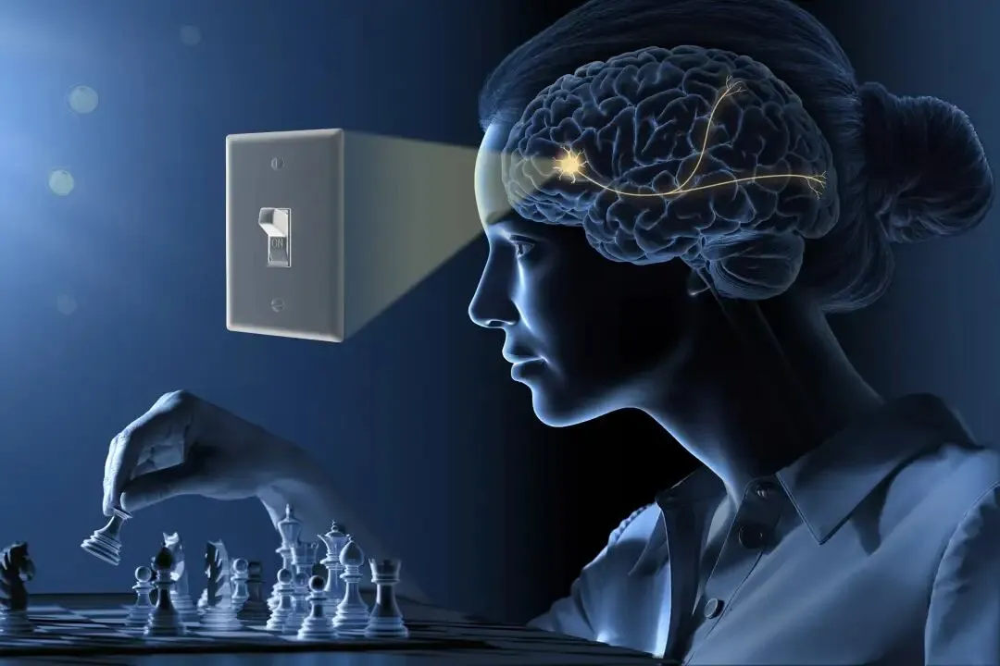
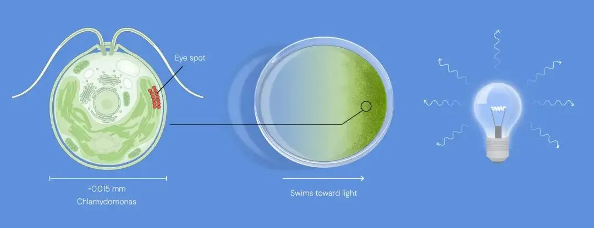
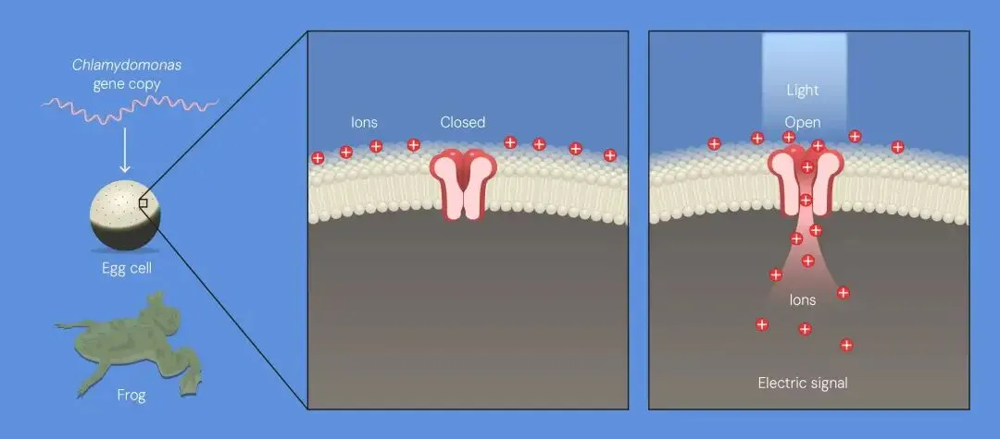
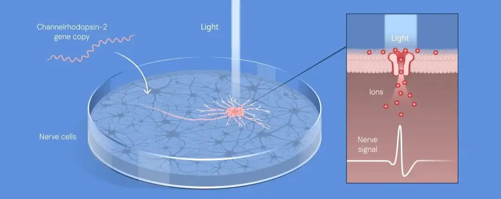
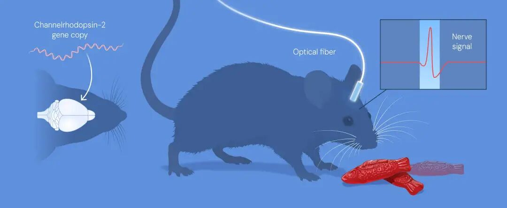

2026年首个诺奖揭晓：光遗传学
原文：https://mp.weixin.qq.com/s?__biz=MzAwMzIzOTk5OQ==&mid=2247542887&idx=1&sn=2627af24dc28e28cf9c7d68f0475296a&chksm=9b3c5137ac4bd821ed9661d0e2c503c55627224617f2792b7844f291963fb62030ebd0b4ada9#rd 合集：文献速递

终于让我蹲到了，北京时间10月5日17时30分，2026年诺贝尔生理学或医学奖揭晓。瑞典卡罗琳医学院诺贝尔大会决定，将奖项联合授予 Karl Deisseroth 、Peter Hegemann 、Georg Nagel 三位科学家，以表彰他们“在光门控离子通道和光遗传学方面的发现 ”（for their discoveries concerning light-gated ion channels and optogenetics）。三人将平分1200万瑞典克朗奖金。
获奖者一览
- Karl Deisseroth（卡尔·戴瑟罗特） ，1971年生。1998年获美国斯坦福大学博士学位，2000年获该校医学博士学位。现为霍华德·休斯医学研究所研究员，斯坦福大学生物工程学及精神病学与行为科学教授。
- Peter Hegemann（彼得·赫格曼） ，1954年生。1984年获德国马丁斯里德马克斯·普朗克生物化学研究所博士学位。现为柏林洪堡大学 Hertie 神经科学高级教授。获奖发现完成于马克斯·普朗克生物化学研究所。
- Georg Nagel（格奥尔格·纳格尔） ，1953年生。1988年获德国法兰克福大学博士学位。现为维尔茨堡大学分子植物生理学教授。获奖发现完成于法兰克福马克斯·普朗克生物物理研究所。
- 给大家组建了交流群，欢迎交流。

一、官方新闻稿
向光的藻类，给了我们一个神经细胞开关
2026年诺贝尔生理学或医学奖授予光遗传学——一种让我们得以揭示活体大脑中神经细胞如何塑造记忆、情感与行为的方法。Peter Hegemann 和 Georg Nagel 在一种单细胞藻类中发现了一种非凡的蛋白——通道视紫红质（channelrhodopsin）。Karl Deisseroth 则把这种蛋白改造成了一个由光控制的神经细胞开关。几位获奖者为神经科学的一个新时代奠定了基础。
大脑如何掌管情感、行为与身体机能，长期以来一直是个谜。20世纪，研究人员开始探究大脑的哪些区域影响哪些功能，但当时所用的方法无法证明因果关系。他们描绘出的大脑图景，就像一张满是问号和未知的草图。如今，这一切正在改变。
“光遗传学为我们绘制大脑提供了曾经只敢梦想的机会。” ——诺贝尔生理学或医学委员会主席 Per Svenningsson
一切始于 Peter Hegemann 的好奇心。他想知道，单细胞藻类衣藻（ Chlamydomonas ）是如何游向光源的。在本世纪初，他和 Georg Nagel 发现了通道视紫红质——一种位于细胞表面、性质独特的藻类蛋白。当它被蓝光照射时，蛋白中会打开一个通道；带电离子随即流入细胞，产生一个电脉冲。他们发现，无论把这种蛋白放进哪种细胞，那些细胞都会变得对光敏感。
Karl Deisseroth 把通道视紫红质的基因导入大鼠的神经细胞。用蓝光照射这些细胞，他便能触发一个神经信号。他在2005年发表了这一突破。两年后，他让这个光控开关在活体小鼠的大脑中运转了起来。
这种用光控制神经信号的方法如今被称为光遗传学，并迅速产生了全球性影响。借助光遗传学，研究人员得以揭示掌控特定记忆、情感和行为的神经环路——这些都与神经和精神疾病相关。在临床医学中，研究人员正尝试用这种方法为视力受损者恢复视力。
光遗传学从根本上改变了我们对大脑的理解。每一天都有新发现，帮助解开人类最大的谜团之一：我们这颗不可思议的大脑究竟是如何工作的。

2026年诺贝尔生理学或医学奖官方插图。© The Nobel Committee for Physiology or Medicine. Ill. Mattias Karlén二、科普背景（全文翻译）
一种感光的藻类蛋白，为神经科学注入了能量
理解大脑如何形成记忆、情感与行为，长期以来一直是研究者的梦想。Karl Deisseroth、Peter Hegemann 和 Georg Nagel 因带来光遗传学的发现而获得2026年诺贝尔生理学或医学奖——光遗传学使我们能够开启或关闭活体大脑中单个神经细胞的活动。如今，这种方法正被世界各地的实验室用来揭示大脑的奥秘。
“我自己的大脑，对我而言是最不可理喻的机器——总是在嗡嗡作响、哼唱、翱翔、咆哮、俯冲，然后深陷泥沼。为什么？这份热情究竟从何而来？” ——弗吉尼亚·伍尔夫1932年写给友人的信
许多人都和伍尔夫一样，对大脑着迷。这个仅重约1.3公斤的器官，如何能承载童年记忆、白日梦与创造力？它如何成为欢乐、爱与嫉妒的源头？它又如何控制心跳的节拍、呼吸的节奏与睡眠的周期？
自古以来，研究者就试图理解这个生物学谜团。20世纪，他们成功确定了大脑的哪些区域掌管各种生理功能。这带来了极其宝贵的认识，但当时可用的方法相对粗糙，无法证明某一类特定的神经细胞直接导致了某种情感或行为。因此，浮现出的大脑图景就像一张失焦的照片，缺失了许多细节。
在那些梦想拥有更精确工具、以探索大脑极其复杂的神经细胞网络的人中，就有 Francis Crick （1962年诺贝尔奖得主）。在1953年DNA双螺旋这一开创性发现几十年后，他开始研究人类意识背后的机制。他设想过在活体大脑中激活单个神经细胞的方法。神经细胞中的信号极其迅速；为了匹配这种速度，他推断，用光或许是最理想的方案。如果分子生物学家能以某种方式操纵神经细胞、让它们对光作出反应，也许就能控制神经活动。Crick 承认，这个想法听起来很离谱，但也许并非不可能实现。
他对未来的设想如今已成现实。Karl Deisseroth、Peter Hegemann 和 Georg Nagel 因发现了一个可用于神经细胞的分子开关而获得2026年诺贝尔奖。借助光，研究人员现在能够在活体大脑中开启或关闭单个神经环路。他们可以让记忆重现、制造情感、驱动行为，并研究参与各类精神与神经疾病的神经元类型。光遗传学正在从根本上改变我们对大脑的理解，也为神经系统与心脏、肠道等身体其他部位细胞之间的相互作用提供了重要认识。
这一切，始于一位研究者的好奇心。20世纪90年代初，位于马丁斯里德的马克斯·普朗克生物化学研究所的 Peter Hegemann 提出了一个简单的问题：单细胞藻类衣藻（ Chlamydomonas ）如何能如此迅速地响应光？

衣藻（ Chlamydomonas ）用它的眼点感知光。当光足够强时，它便游向光源。© The Nobel Committee for Physiology or Medicine. Ill. Mattias KarlénHegemann：研究一只游动的藻类如何感知光
衣藻以趋光游动而闻名。当研究者把这种绿藻搅入培养皿，液体会泛起淡淡的绿色。若此时只照亮培养皿的一侧，那抹绿色便会朝光源方向移动——这些微小的藻类正游向光明。藻类用一个“眼点”（eyespot）来感知光：那是细胞表面一个微小的橙色斑点，内含一种捕获光的分子——视黄醛（retinal）。
Hegemann 对藻类的眼点展开了研究。他用微小的电极测量衣藻眼点被照亮时产生的电信号。藻类的反应快得惊人：光到达眼点后仅半毫秒，一个电脉冲就出现了。
与当时研究者已知的其他生物系统相比，这快得非同寻常。举例来说，光照到人眼会触发一条复杂的化学级联反应，涉及许多不同步骤。这条链条末端的蛋白——一个离子通道——在细胞表面形成一个开口，带电离子由此流过，产生电信号。整个过程至少需要10毫秒。那么，衣藻对光的反应怎么会比我们自己的眼睛快二十倍以上？
藻类中快速的光反应，点燃了 Hegemann 的好奇心
对于这种超快的反应，Hegemann 只能想到一种解释：在衣藻中，这一过程一定比人眼简单得多。20世纪90年代初，他提出一个假说——单个蛋白复合体同时捕获光并充当离子通道 。然而，他的提法遭到了质疑。当时，研究者已知许多不同类型的离子通道，但没有任何一种能自行对光作出反应。
为了检验自己的假说，Hegemann 试图分离出衣藻中这种感光蛋白。但这说起来容易做起来难。一旦把藻类眼点中的蛋白从其天然环境中取出，它们就变得不稳定、极易被破坏，很难研究。然而，大约在世纪之交，在多年受挫之后，研究组有了一个耐人寻味的发现：日本研究者已测出衣藻的DNA，并公开了成千上万个基因的遗传密码。在其中，Hegemann 的研究组找到了两个与已知感光蛋白基因高度相似的基因。它们之中，是否藏着他们苦苦寻找的那个蛋白的密码？
为了回答这个问题，Hegemann 联系了一位同事：法兰克福马克斯·普朗克生物物理研究所的 Georg Nagel。他拥有迈出这决定性一步所需的知识——而这一步，将彻底改变神经科学。
Hegemann 与 Nagel 发现了一种非凡的蛋白
Nagel 用蛙的卵细胞来研究蛋白。收到这两个衣藻基因后，他把它们的拷贝分别注入不同批次的蛙卵，蛙卵随之开始大量生产这两种未知蛋白。这些蛋白最终出现在卵细胞表面的细胞膜上。Nagel 于是可以研究它们的功能，并很快发现，Hegemann 十年前提出的假说是正确的：这些新发现的蛋白是遇光即开的离子通道 。
它们被命名为通道视紫红质-1和通道视紫红质-2（channelrhodopsin-1、-2）。这里我们暂且放下前者，专注后者——正是它铺就了通往光遗传学的道路。

当 Nagel 和 Hegemann 把衣藻基因导入蛙卵，蛙卵开始生产离子通道蛋白，并使其出现在卵细胞表面。研究者一照光，离子通道就打开了，离子随之流过通道，产生电信号。© The Nobel Committee for Physiology or Medicine. Ill. Mattias Karlén这种藻类蛋白能激活人类细胞
正如 Hegemann 的实验一样，Nagel 对通道视紫红质-2的表征显示，它对光脉冲的反应异常强烈而迅速：在0.2毫秒内，蛙卵细胞表面就打开了一个通道，带正电的离子随即流过，产生电信号。
Hegemann 和 Nagel 意识到，他们做出了一项革命性的发现。他们把通道视紫红质-2的基因导入人胚肾细胞和仓鼠肾细胞进行测试。这些细胞变得对光敏感：暴露于光下时，它们便产生电信号。
2003年，Hegemann 和 Nagel 发表了实验结果。他们提出，通道视紫红质-2可以作为一种强大的工具，用光在细胞中产生电脉冲 。此后，斯坦福大学的一位年轻科学家接过了接力棒。
与精神科患者的相遇，对 Deisseroth 具有决定性意义
20世纪90年代，Karl Deisseroth 开始学医时，曾考虑成为一名神经外科医生，但他的一部分训练是在一家精神科诊所完成的。在那里，患者的痛苦和他们对帮助的渴求深深触动了他。与此同时，他开始思考：大脑为何在不同的人身上能如此不同？为什么抑郁症患者如此难以感到快乐？自闭症、精神分裂症中的妄想，又是由什么引起的？
在学医的同时，他还攻读了神经科学博士学位。在实验室里，他用薄薄的脑片，在培养皿中观察它们。他的研究带来了重要认识，但他意识到，要理解自己在诊所遇到的疾病，他需要研究活体大脑中神经细胞是如何工作的。
其他研究者也在尝试开发控制特定神经细胞活动的方法，正如 Francis Crick 所设想的那样。然而，他们中的许多人都担心，把时间和金钱浪费在一个看似不切实际的梦想上。Deisseroth 意识到，他必须承担失败的风险：他能提供给患者的治疗很少有效，且常常带来令人衰弱的副作用。若要找到更好的办法帮助他们，他就需要对大脑有更深刻的理解。
成功了！把藻类蛋白搬进神经细胞
当 Deisseroth 组建自己的研究组后，他们开始寻找一种可用于在神经细胞中触发电脉冲的蛋白。他们测试了众多候选者。当 Deisseroth 听说通道视紫红质-2的发现后，他写信给 Georg Nagel，询问能否获得编码该蛋白的DNA。
DNA 送到 Deisseroth 的实验室后，他把它导入培养皿中培养的大鼠神经细胞。他曾担心这些敏感的神经细胞会被外来基因损害，但它们毫无问题地开始生产通道视紫红质-2。当研究组用蓝光照射这些神经细胞时，细胞立刻作出反应。光引发了一个神经信号，而这个信号还能传播到其他神经细胞。
2005年，Deisseroth 的研究组发表了这一发现。他们实现了一个决定性的里程碑——尽管 Deisseroth 明白，距离自己的目标还有很长的路要走：控制活体动物体内神经细胞的活动。

Deisseroth 把编码通道视紫红质-2的基因导入他在培养皿中培养的神经细胞，使这些神经细胞对光敏感。用蓝光照射，研究者便能触发快速的神经信号。© The Nobel Committee for Physiology or Medicine. Ill. Mattias Karlén在活体大脑中光遗传学地控制神经细胞
Karl Deisseroth 由此开启了大量合作，包括与 Peter Hegemann、Georg Nagel 的合作。他也把自己的发现分享给其他意识到其巨大潜力的研究者。以 Deisseroth 的实验室为前沿，研究者们很快找到了更多能够开启或关闭神经细胞、且由不同波长光激活的蛋白。
2006年，这种新方法被命名为光遗传学（optogenetics） 。一年后，Deisseroth 成功激活了活体小鼠大脑中的神经细胞。他的研究组把通道视紫红质-2的基因导入运动皮层（掌管运动的脑区）中特定类型的神经细胞，然后用一根细光纤穿过头骨上的小孔送入大脑，去照亮这些神经细胞。这使他们得以控制小鼠胡须的运动。

Deisseroth 的研究组把通道视紫红质-2的基因送入活体小鼠的大脑，再插入一根细光纤。当通过光纤照亮神经细胞时，被触发的神经信号引发了胡须的运动。© The Nobel Committee for Physiology or Medicine. Ill. Mattias Karlén同年，Deisseroth 与其他研究者合作，用光遗传学以可控的方式唤醒了睡眠中的小鼠。研究组把通道视紫红质-2导入一种新发现、疑似控制觉醒的神经细胞。当他们把光照在这些神经细胞上，小鼠醒了过来——假说得到证实。
光遗传学幼年期的另一项著名工作发表于2012年。与 Susumu Tonegawa （1987年因免疫学发现获诺贝尔奖）合作，Deisseroth 成功激活了一个“记忆痕迹 ”（engram）——即记忆形成时产生的特定神经通路模式。研究者研究小鼠经历恐惧时的大脑，记录下哪些神经细胞似乎形成了对这段经历的记忆。当他们之后重新激活这些神经细胞时，小鼠即便当时并未身处险境，也表现出恐惧的迹象。这是研究者首次能够精确证明，哪些神经细胞是某段特定记忆所必需的。
神经科学的新纪元
在活体大脑中激活特定类型神经细胞的能力，从根本上改变了我们对这个不可思议器官的理解。成年人的大脑约有900亿个神经细胞，每一个都与其他神经细胞形成数千个连接。在许多情况下，一个神经细胞的通路会延伸到大脑的另一个完全不同的区域；而掌管完全不同的身体机能的神经细胞，也可能紧密地混杂在一起。
多亏了光遗传学，研究者如今能够精确发现，在一个复杂的神经纤维束中，究竟是哪些神经细胞在控制不同的脑功能。例如，他们已经鉴定出掌管痛觉、社交行为、口渴、进食、奖赏和注意力的神经环路；也找到了负责从控制昼夜节律到免疫系统被激活时引发发热等种种功能的神经细胞。
当研究者研究更复杂的行为时，比如小鼠如何照料幼崽，他们发现：一个行为的各个组成部分，可以由彼此独立的神经环路分别控制。一个环路掌管的是……（原文在此续接对具体环路的描述，并进一步指出光遗传学在临床上的应用前景，包括为视力受损者恢复视力）。
光遗传学从根本上改变了我们对大脑的理解。每一天都有新发现，帮助解开人类最大的谜团之一：我们这颗不可思议的大脑究竟是如何工作的。
三、写在最后
从一只“追光”的单细胞藻类，到能精确点亮任意一个神经元的开关，光遗传学的故事横跨了植物学、膜生物物理、神经科学与精神病学。它提醒我们：基础科学里那些看似“无用”的好奇心，往往是几十年后改变一个学科的那把钥匙。
而这次诺奖的名单里，还有不少值得细说的故事——为什么去年的拉斯克奖名单和今年的诺奖名单并不相同？一位华人科学家又为何与这段历史擦肩而过？我们将在另一篇推送里慢慢展开。
参考与资料来源
1. The Nobel Assembly at Karolinska Institutet. Press release: The Nobel Prize in Physiology or Medicine 2026. https://www.nobelprize.org/prizes/medicine/2026/press-release/
2. The Nobel Assembly at Karolinska Institutet. Popular science background: A light-sensitive algal protein energised neuroscience. https://www.nobelprize.org/uploads/2026/10/popular-medicineprize2026.pdf
3. The Nobel Assembly at Karolinska Institutet. Scientific background: The Nobel Prize in Physiology or Medicine 2026. https://www.nobelprize.org/uploads/2026/10/advanced-medicineprize2026.pdf
4. 官方插图：© The Nobel Committee for Physiology or Medicine. Ill. Mattias Karlén（仅限非商业用途使用）

欢迎交流

 留一个领取资料、开箱即用的单细胞分析镜像的助手[Biomamba_zhushou]，方便各位随时交流。同时我们也构建了交流群矩阵，欢迎大家一起讨论。
留一个领取资料、开箱即用的单细胞分析镜像的助手[Biomamba_zhushou]，方便各位随时交流。同时我们也构建了交流群矩阵，欢迎大家一起讨论。
 您点的每个赞和在看，我都认真当成了喜欢
您点的每个赞和在看，我都认真当成了喜欢